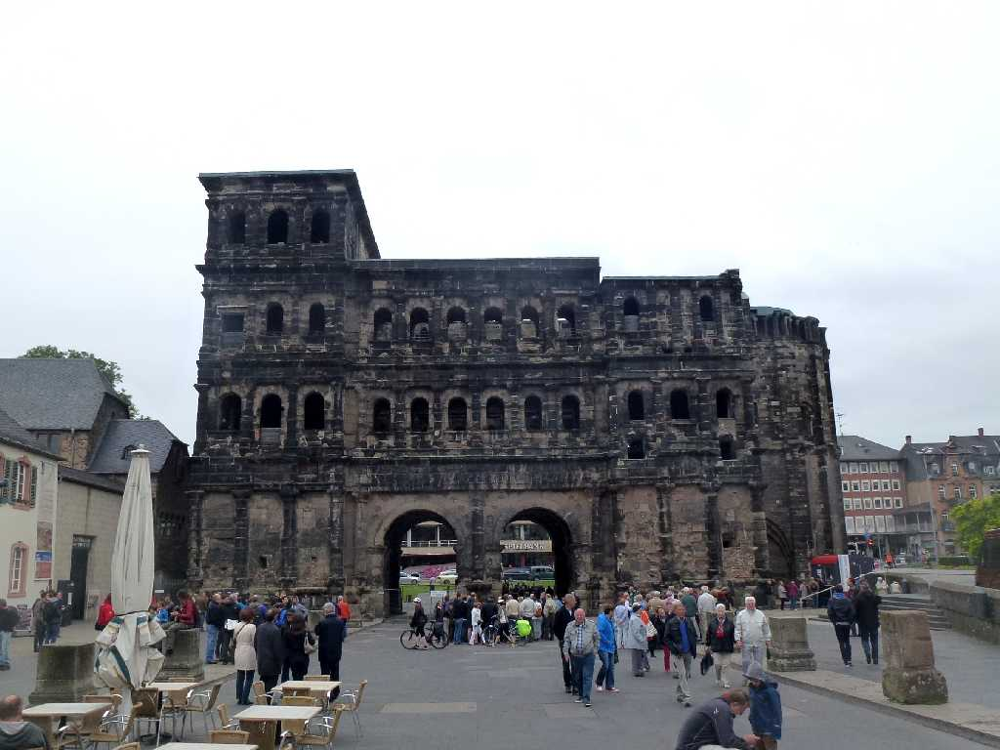
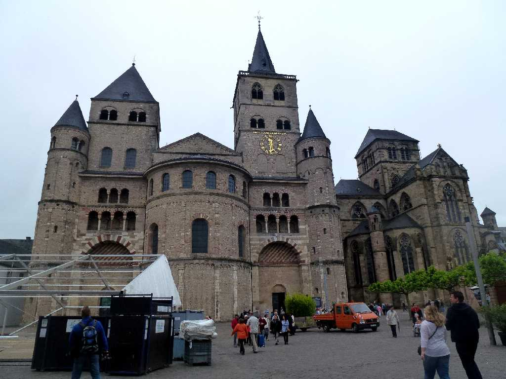
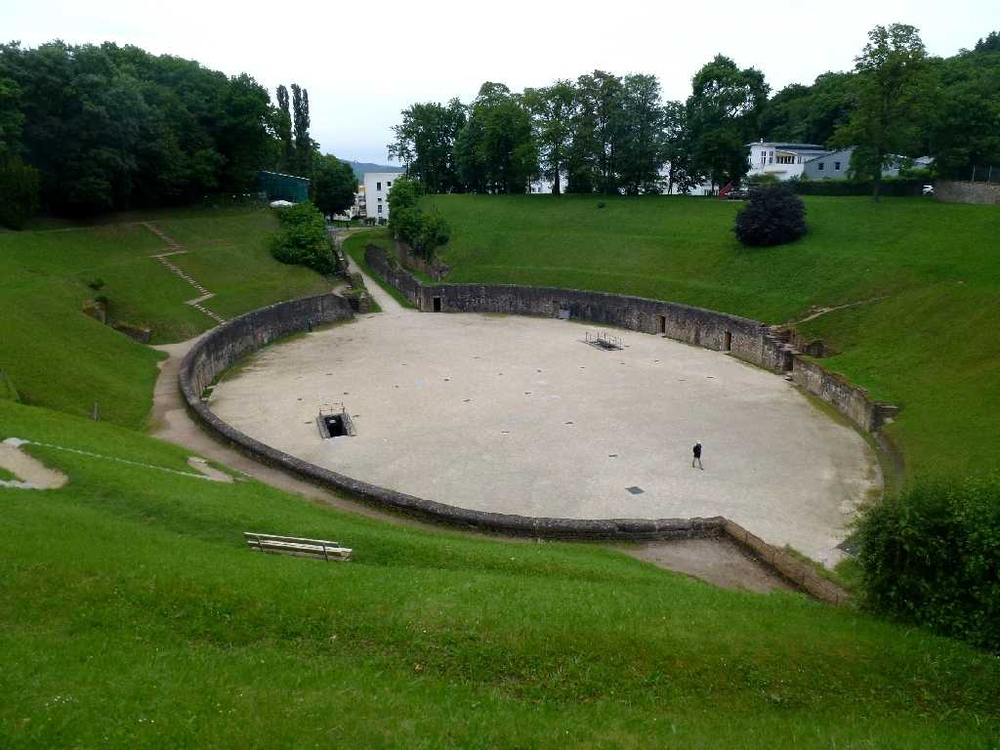
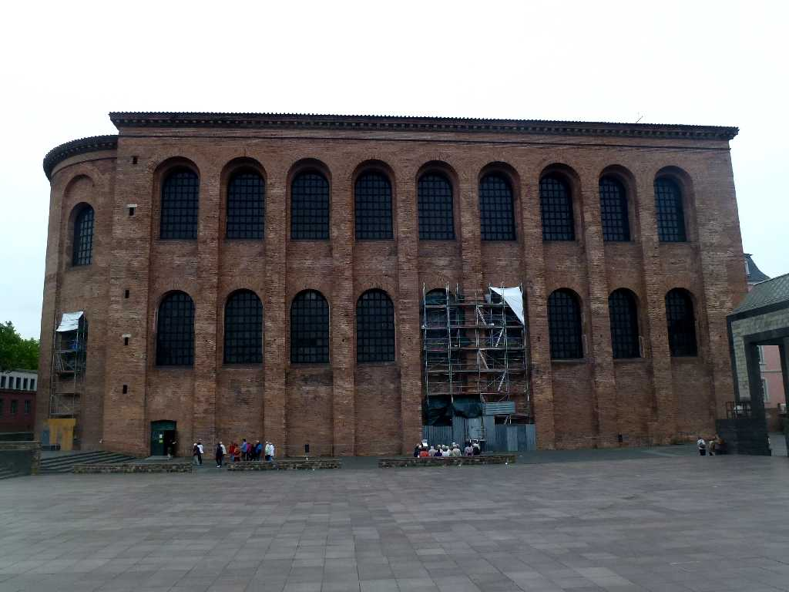
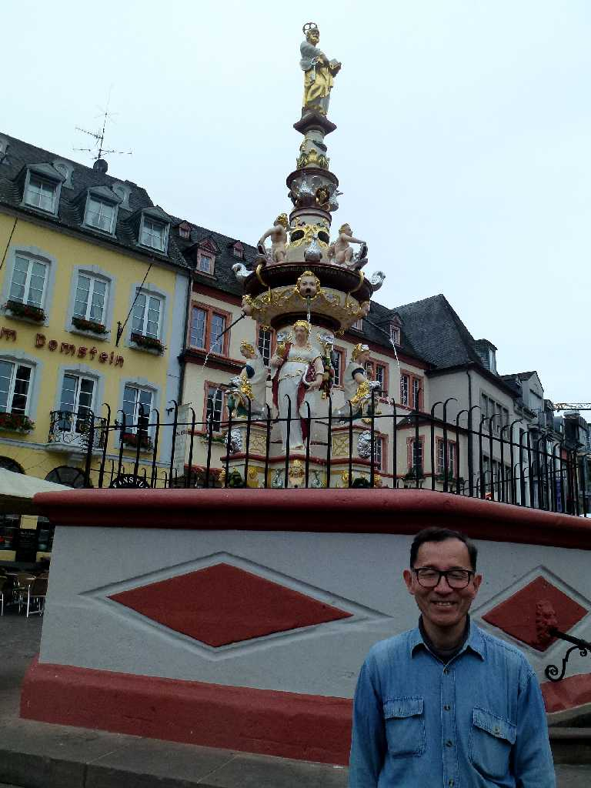

Porta Nigra Trier
ポルタニグラ門は街の城壁の北門として２世紀に創られた

St. Peter Trierer Dom Liebfrauenkirche

Amphitheater
Ａ.Ｄ.１００年頃創られた古代ローマ円形劇場で２０,０００人収容できたと云われている

Konstantinbasilika
コンスタンティヌスのバシリカと云われる王の謁見場

May 30 2014 Hauptmarkt